WotLK Warmane Icecrown - Leatherworking 1 to 450 (x3) and Bonuses
Fur linings, leveling route and what to craft for gold.
Leatherworking Bonuses
Leatherworkers gain access to Fur Lining enchants
that replace standard bracer enchants.
These enchants are Bind on Pickup and can only be used
by the Leatherworker.
Main Fur Lining Options
-
Fur Lining – Attack Power
+130 Attack Power -
Fur Lining – Spell Power
+76 Spell Power -
Fur Lining – Stamina
+102 Stamina
Leveling from 1 to 450
Required Materials
Cost: ± 1500 Gold (from Auction House)
SOME CRAFTS ARE YELLOW OR GREEN.
YOU MIGHT NEED MORE MATERIALS THAN LISTED HERE.
Classic
| Leather & Scraps | Thread, Vendor Materials and Misc |
|---|---|
|
From Vendor :
|
| TSM Shopping Strings | |
Ruined Leather Scraps/exact/x21 Light Leather/exact/x71 Medium Hide/exact/x38 Cured Medium Hide/exact/x7 Heavy Leather/exact/x66 Heavy Hide/exact/x7 Cured Heavy Hide/exact/x7 Thick Leather/exact/x125 Rugged Leather/exact/x131 |
Runecloth/exact/x50 |
TBC
| Leather & Scraps | Vendor Materials and Misc |
|---|---|
|
|
| TSM Shopping Strings | |
Knothide Leather Scraps/exact/x15 Knothide Leather/exact/x84 |
Fel Scale/exact/x10 |
WotLK
| Leather | Misc |
|---|---|
|
|
| TSM Shopping Strings | |
Borean Leather/exact/x174 Heavy Borean Leather/exact/x19 Arctic Fur/exact/x22 |
Nerubian Chitin/exact/x80 Jormungar Scale/exact/x12 Crystallized Water/exact/x10 Eternal Fire/exact/x6 Eternal Shadow/exact/x8 Frozen Orb/exact/x11 |
Leatherworking Trainer
For Leatherworking, you need to visit 3 different trainers throughout your leveling.
| Classic | TBC | WotLK |
|---|---|---|
Alliance : any Alliance capital : Stormwind, Ironforge, Darnassus, Exodar Horde : any Horde capital : Orgrimmar, Thunder Bluff, Silvermoon City, Undercity |
Neutral : Shatrath (lower city) - Darmari | Neutral : Dalaran - Diane Cannings |
Leveling 1 to 450
Classic
| Level | Craft | Q | Total Material |
|---|---|---|---|
| Learn Apprentice Leatherworking at 1 | |||
| 1-22 | Light Leather | 7 | 21 Ruined Leather Scraps |
| 22-37 | Light Armor Kit | 7 | 7 Light Leather |
| 37-67 | Cured Light Hide | 10 | 10 Light Hide, 10 Salt |
| Learn Journeyman Leatherworking at 50 | |||
| 67-85 | Embossed Leather Gloves | 6 | 18 Light Leather, 12 Coarse Thread |
| 85-100 | Fine Leather Belt | 5 | 30 Light Leather, 10 Coarse Thread |
| 100-112 | Medium Leather | 4 | 16 Light Leather |
| 112-130 | Cured Medium Hide | 8 | 8 Medium Hide, 8 Salt |
| Learn Expert Leatherworking at 125 | |||
| 130-151 | Dark Leather Belt | 7 | 7 Fine Leather Belt, 7 Cured Medium Hide, 14 Fine Thread, 7 Gray Dye |
| 151-160 | Heavy Leather | 6 | 30 Medium Hide |
| 160-172 | Cured Heavy Hide | 7 | 7 Heavy Hide, 21 Salt |
| 172-181 | Heavy Armor Kit | 4 | 20 Heavy Leather, 4 Fine Thread |
| 181-190 | Barbaric Shoulders | 3 | 24 Heavy Leather, 3 Cured Heavy Hide, 6 Fine Thread |
| 190-202 | Guardian Gloves | 4 | 16 Heavy Leather, 4 Cured Heavy Hide, 4 Silken Thread |
| Learn Artisan Leatherworking at 200 | |||
| 202-205 | Thick Leather | 1 | 6 Heavy Leather |
| 205-235 | Nightscape Headband | 11 | 55 Thick Leather, 22 Silken Thread |
| 235-250 | Nightscape Pants | 5 | 70 Thick Leather, 20 Silken Thread |
| 250-265 | Rugged Armor Kit | 5 | 25 Rugged Leather |
| 265-286 | Wicked Leather Bracers | 7 | 56 Rugged Leather, 7 Black Dye, 7 Rune Thread |
| Learn Master Leatherworking at 275 | |||
| 286-301 | Runic Leather Belt | 5 | 50 Rugged Leather, 50 Runecloth, 5 Rune Thread |
TBC
| Level | Craft | Quantity | Total Material |
|---|---|---|---|
| 301-310 | Knothide Leather | 3 | 15 Knothide Leather Scraps |
| 310-325 | Knothide Armor Kit | 6 | 24 Knothide Leather |
| 325-337 | Heavy Knothide Leather | 10 | 50 Knothide Leather |
| 337-352 | Scaled Draenic Boots | 5 | 10 Knothide Leather, 10 Fel Scales, 15 Rune Thread |
WotLK
| Level | Craft | Q | Total Material |
|---|---|---|---|
| Learn Grand Leatherworking at 350 In Northrend | |||
| 352-382 | Borean Armor Kit | 11 | 44 Borean Leather |
| Alternative : 352-376 | Borean Leather | x | x Borean Leather Scraps |
| 382-385 | Iceborne Gloves | 1 | 8 Borean Leather |
| 385-391 | Iceborne Boots | 2 | 20 Borean Leather |
| 391-406 | Heavy Borean Leather | 17 | 102 Borean Leather |
| 406-412 | Nerubian Leg Armor | 2 | 8 Heavy Borean Leather, 2 Nerubian Chitin |
| 412-415 | Jormungar Leg Armor | 1 | 3 Heavy Borean Leather, 12 Jormungar Scale |
| 415-421 | Dark Frostscale Leggings | 2 | 8 Heavy Borean Leather, 10 Crystallized Water |
| 421-427 | Purehorn Spaulders | 2 | 60 Nerubian Chitin |
| 427-445 | Frosthide Leg Armor | 9 | 18 Arctic Fur, 18 Nerubian Chitin, 9 Frozen Orb |
| 445-450 | Ice Striker's Cloak | 2 | 4 Arctic Fur, 6 Eternal Fire, 8 Eternal Shadow, 2 Frozen Orb |
How to make gold with Leatherworking
Leg Attachments
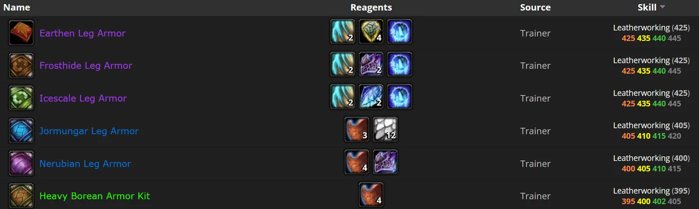
Drums
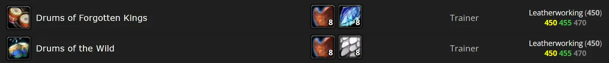
Bags
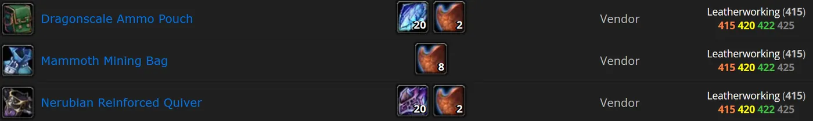
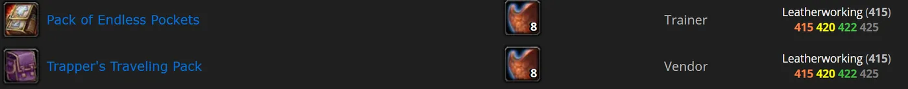
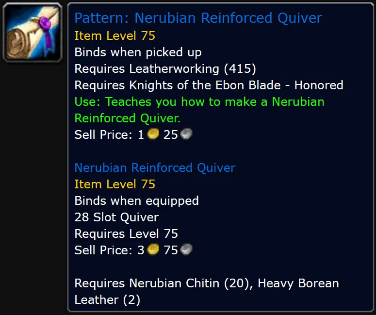
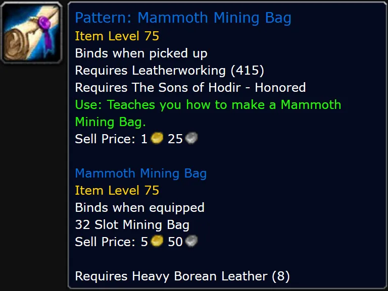
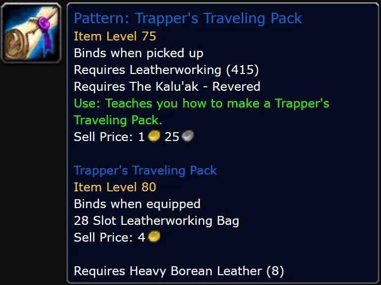
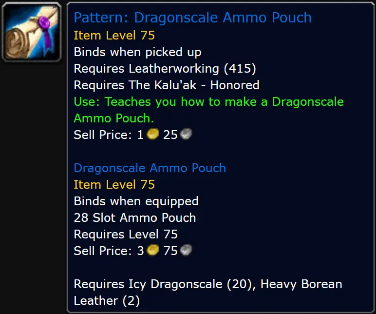
Gear
264 Item Level
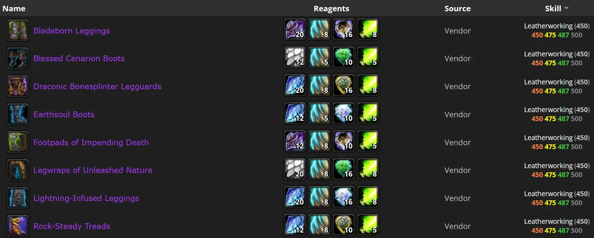
Recipe vendor: Alchemist Finklestein in Icecrown Citadel (raid).
Requires to be Revered with the Ashen Verdict to get all the recipes (some of them only require Honored).
245 Item Level
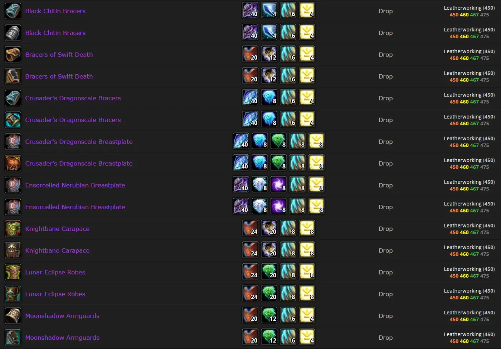
Recipes drop in Trial of the Crusader (ToC raid) or you can buy them in the Auction House.
Each item has a Horde and Alliance version.
232 Item Level
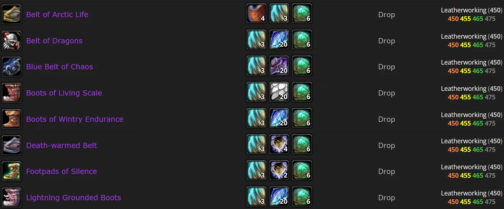
Recipes drop in Ulduar (raid) or you can buy them in the Auction House.
213 Item Level
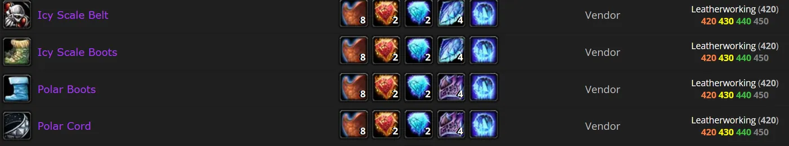
200 Item Level
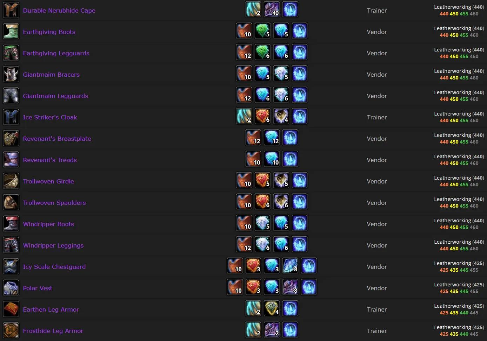